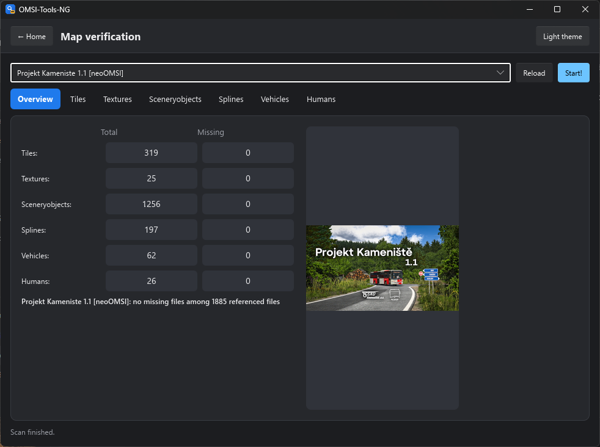
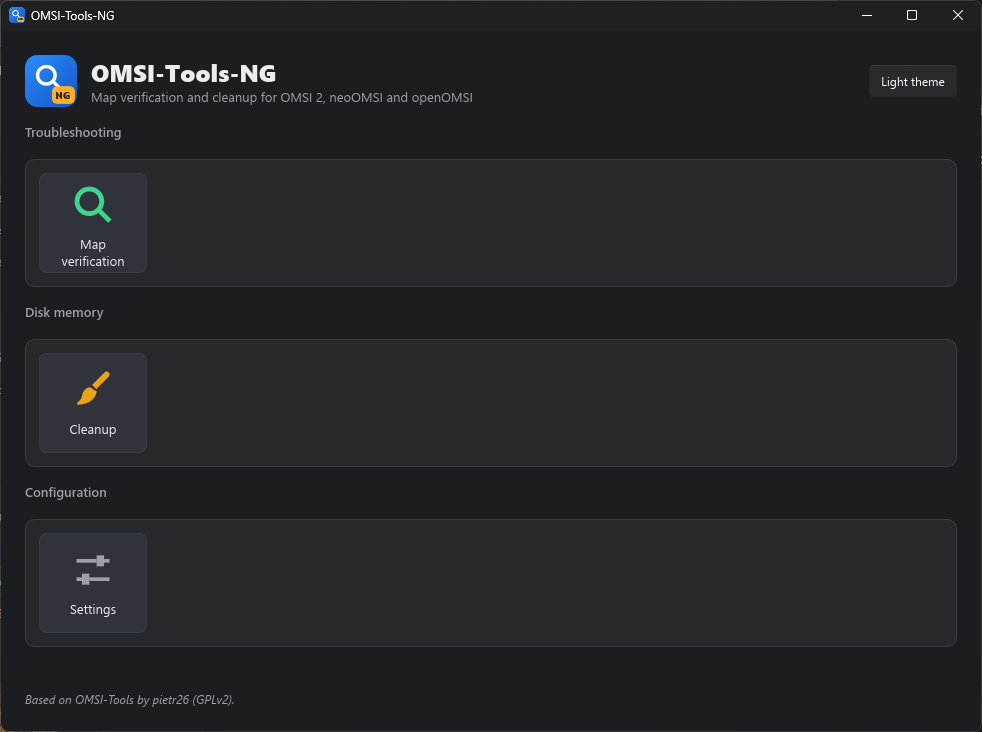

Find missing content.
Clean up the rest.
A very fast, modern rewrite of the map verification and cleanup tools of OMSI-Tools, for OMSI 2, neoOMSI and openOMSI.
Windows 10 / 11 · x64 · .zip ↓ Download for Linux
x86_64 · .tar.gz · needs GTK 3 ↓
Version 1.1.0 · All releases · Changelog

Everything you need, nothing you don't
Two focused tools, built on a Rust core that is covered by unit tests.
Extremely fast
A native Rust scanner on a worker thread: the UI never freezes, and a big map is checked in about two seconds.
Map verification
Scans global.cfg, tiles (including Chrono), ground textures, parklists, humans, AI lists and trains, and reports every missing file by type with the files that reference it.
One content pool
A file counts as present if it exists in any configured directory. A neoOMSI map that uses an object from OMSI 2 is valid.
Safe cleanup
Unused Sceneryobjects, Splines and Vehicles in three separate lists. Preview first, then move to a folder or the recycle bin – nothing is ever hard-deleted. Follows references between folders and skips the nEditor folders.
Read-only scanning
Scans never write to your installs. Windows-1252, UTF-16 and UTF-8 text files, backslash paths and any capitalisation are handled the same on every platform.
Six languages, two themes
English, Español, Deutsch, Polski, Čeština and Français, with a light and a dark theme.
Release build, measured on a real OMSI 2 + neoOMSI installation; your times will vary.
Screenshots
The same clean interface on Windows and Linux.


Build from source
You need a recent stable Rust toolchain.
Windows
cargo test
cargo run -p appLinux (Debian / Ubuntu)
sudo apt install pkg-config libfontconfig1-dev \
libxkbcommon-dev libgtk-3-dev
cargo run -p app